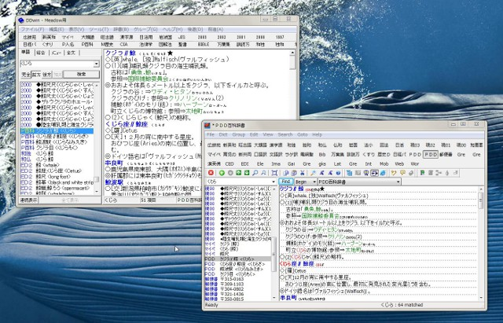
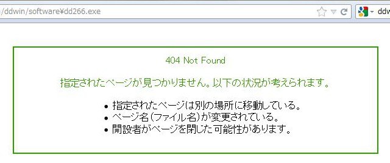
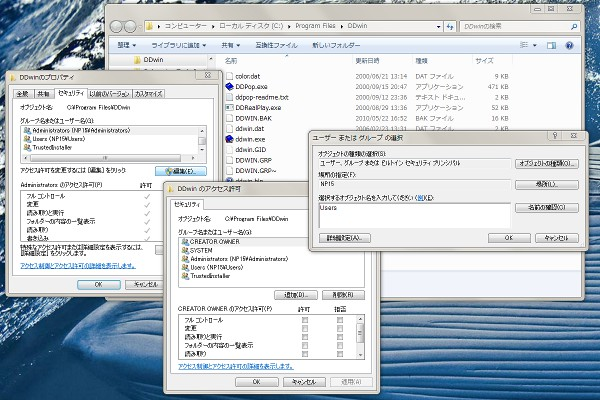
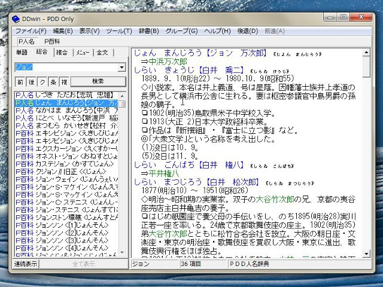

恥をネットに知らせないローカル電子辞書 EBWin/DDwin

医者と弁護士と坊主は人の苦しみで飯を食う職業で、特別に高い倫理が必要とされる。そのように中坊公平という弁護士が語っていた。彼は「住専問題」のため特別に作られた債権回収会社の社長となり、その業務がもとで弁護士を辞職したのだった。今同じことを語り継いでいたのが弁護士で大阪府知事から大阪市市長となった橋下徹らしい。 その医師と坊主は頭を下げないなんて慣用句もある。一神教には「聖別」という言葉があるようだが、そこにあるものを見せず平然としていることが社会を守るという職業はある。 医師や坊主に比べれば軽いものかもしれないが、営業の秘密なんてのはどこにでもあるから、社会に見せているのとはちょっと違う実態がある職のほうが多いのかもしれない。社会には裏があるというのは、ヤクザな仕事であるということではない。結局そういうことという面も多少あるかもしれないが、「日常」というのは日々創造されてそこにあるということだ。 IT 関係もやはりそういう面はある。人と人が通信している。そこに空気があればいいってものではない。確かに今は無線通信が盛んで空気の上を流れているんだが、それを保守する人々というのはいて、そういう人は、何かあったときに人様のメールを読んだり通信の中身を調べなきゃならないことだってあるわけだ。 それも同じ人間なんだから、それなりの気苦労はあるのが当然で、私はそこに近い経歴を持ってきた人間だから、その職のあり方が普通の人よりはわかるという面がある。医師が頭を下げないように彼らもそれを負担とは言わないかもしれないが、だからこそ、市民として私のような者がその負担を少なくするお手伝いをできればと考える。 病気になってそれをガマンして負担を減らすことは医師は望まない。健康になることは喜ぶ。何かをネットで調べて無かったから、いらない非常識だなんて思って欲しくはない。でも、この複雑さを許容した社会で、ネットに頼らずその人が智に辿りつけるなら、それこそありがたいことなのだ。 ■検索エンジンという怪物 現在は、ブラウザの端にでも付いた検索窓に、チョチョッと単語を打ち込めば、何万何十万といった関連サイトが表示される。 中でも上位に来ることが多い Wikipedia は便利なもので、歴史的人物から流行語まで、ちょっとそんなことを公けにしててもいいのかということまで無料で読める。ただ、Wikipedia というのは一般単語の意味や英訳を調べたいといったことには不向きで、そこは別の辞書サイトのデータを探るのがセオリーだろう。 でも、こんな簡単に知に辿り着けて裏がないのか？と思うのは、古い人間の証拠だろうか。企業なんかだと実際、検索単語によって開発の状況が漏れるのを嫌って、独自の検索エンジンを使っているといった噂は読んだことがある。「インターネット」は巨大なゆすりたかりの装置なんじゃないかという疑いだ。 結局そういうことという面も多少あるかもしれないが、しかし、そういう「裏」を考えるのは思い過ごしだろう。でも、裏方として働いている人がいるというのは本当だ。 ちょっとした英単語を調べるのぐらい無料でできたっていいじゃないかと思う。思うのは勝手だ。でも、それを皆がやったらどうなる。皆がやったら広告が多く表示されて結構なことだって？あなた、ちょっと単語を調べたときに出るような広告をクリックしたことがあるか？ 「裏」っていうのは、そういうところで「いや、私はクリックしたことがあるよ」という日常、「そこはクリックではなくて表示そのものに意味があって…」と言える日常に支えられてあるということだ。あなたはそれを馬鹿にしなかったか。 私にはそれがバカみたいに見えた。だから、私はニートな生活を選ぶようなことになったのだと今になって考える。そう考えてももう道を<ruby><rb>易</rb><rt>か</rt></ruby>えることはない。だから、私は過去にあった技術を振り返る。検索できることを買うという文化もありえたではないか、と。 ■EPWING という古い電子ブックの規格 EPWING は古い電子書籍の規格である。Windows では DDwin と EBWin という古くからある無料ソフトで使える。DDwin は無料ソフトとしてはもう開発がされてないようだが、Windows 7 の今もまだまだ使えている。EBWin のほうは作者がスマートフォンにソフトを移殖するなどして、正直な表現を使えば、孤独な戦いを続けていらっしゃる。 古いということはコンピュータの上では悪いことばかりではないとなる。昔の乏しい計算資源に対応しているがゆえに、とても軽い電子辞書の実装と今ではなっているのだ。 古いがゆえに今では入手の難しい辞書も多いのが玉にキズだが、伝統の受け継がれやすい大学などの機関では、使い継がれているところも案外多いのではないか。その「文化」をハイソな大学生以外にも知って欲しいというのが、長々とノウガキを垂れたが、本稿の目的なのである。 今回は DDwin と EBwin をインストールからその利用方法を中心にお伝えしたい。 ■とりあえずフリーの辞書を用意 EPWING 形式の辞書は買うか、別の形式の辞書を EPWING 形式に変換して使うのが普通だが、無料で公開されている辞書や文書も存在している。 とりあえず試験的にそれらをダウンロードし、特定のフォルダに展開しておこう。 「EPWING 無料」とでも検索すればいいが、その中からまずは Maximilkにある「PDD 百科辞書」と「PDD 人名辞典」を例として使おう。Maximilk でそれぞれの最新版のリンク先は Vector 社のダウンロードページとなっている。 (Vector のPDD 百科辞書, PDD 人名辞典)。そこで pdh03.exe と pddj011.exe をダウンロードしよう。(バージョン 0.3 と 0.11 なので 03と 011 が付くのだろう。バージョン違いは適宜読み換えて欲しい。) この pdh03.exe と pddj011.exe は 7zip 形式の自己解凍アーカイブで、 WinRAR などを使えば exe で実行しなくても展開できる。ただ、内部に子ディレクトリがあるかどうかで両者は少し違う。 pdh03.exe を解凍すると pdh03 というフォルダができて、そこに readme.txt があるのでそれを読む。PDH というフォルダと CATALOG というファイルが入った Epwing というフォルダが辞書本体だと書いてある。<b>他の辞書と名前が重ならないよう、Epwing を pdh03 などに名前を変えよう。</b> pddj011.exe を解凍すると、PDDJ というフォルダと README_J.TXT と CATALOGS ができる。<b>他の辞書と共存させるため、pddh011 というフォルダを作り、PDDJ と CATALOGS をそこに入れよう。</b> DDwin は CD-ROM として電子辞書が用意されてきたという経緯もあって、あるドライブの子のフォルダを特定の深さまで、すべて調べて存在する辞書を見つけるようになってる。よって、EPWING 辞書を集めたフォルダはルート(c:\)以下に作ったほうが都合が良い。EBWin はドライブの替わりにフォルダも指定できるが、DDwin を使う気がない方も、ひょっとすると DDwin を使う日が来るかもしれないので、ルートに c:\dic というフォルダを作っておこう。 その c:\dic フォルダに、先の Epwing を pdh03 に名前を変えたフォルダと ddj011 というフォルダを移動する。 フォルダの構造が次のようになっていればこの作業は完了。もちろん、先に他のフリーな辞書を持って来て c:\dic 以下に置いておいても良い。 c:\dic c:\dic\pdh03 c:\dic\pdh03\CATALOGS c:\dic\pdh03\PDH\DATA c:\dic\pdh03\PDH\GAIJI (あと DATA と GAIJI の中身) c:\dic\pddj011 c:\dic\pddj011\CATALOGS c:\dic\pddj011\PDDJ c:\dic\pddj011\PDDJ\DATA c:\dic\pddj011\PDDJ\GAIJI (あと DATA と GAIJI の中身) (pdh03 や pddj011 以外の辞書も同様に CATALOGS とフォルダからなる。) ■DDwin のインストール 私は貧弱なマシンを使っているから動作の軽い DDwin をメインに使っている。が、今から使う人は普通は EBWin を使うべきだろう。いちおう DDwin のインストールの説明もしておくが、普通は、EBWin の説明まで読み飛ばしてもらってよい。 まず、DDwin のホームページ に行くと、DDwin は 2005年 ごろで更新が止まってるらしい。その割には 2006年11月 以降に発売となったWindows Vista の動作確認情報が載っている。 困ったことに、そこからダウンロードができない。2012年5月21日現在、下のようなエラーが出る。<b>ただし、ここで諦めてはいけない。実は、URL のファイル名の直前の "/"が "￥" (または "＼") になっているだけで、そこを修正すればダウンロードできる。</b>
本体は DDwin Ver. 2.66。いちおう DDPop Ver. 1.01 もダウンロードしておこう。 先に述べておけば、DDPop は、常駐させておくと、任意のアプリケーションにおいて Ctrl+右クリックで DDwin に単語を調べさせられる。 けれど、どんなアプリの文字列、例えばブラウザに表示されたパスワードも、ウィンドウシステムを介すれば他のアプリから勝手に読めてしまうようでは、 Windows 7 などの厳しい管理を求める暗転画面など意味がない。DDPop に関しては古いアプリで現在のセキュリティが強化された Windows 環境ではうまく動かないというのは、むしろ当然というべきだ。 DDPop が Microsoft と交渉の上で機能を特別に提供された有料ソフトか、特別な地位のあるフリーソフトというなら話は別だが、そうではあるまい。であれば、DDPopをインストールすることは、あなたが使うセキュリティソフト(会社)に、アプリが他のアプリの文字列を勝手に読み出すことは普通のこととみなすという意思表示をしたと受けとられかねない。私はそれが心配だ。 あなたが何らかの組織に属していて、DDPop のインストールに「特別の許可」を求めた、または、どうしても個人としてそれが欠かせないと判断したなら、「特別な地位」を信じることを止めはしない。そうでないなら、私は DDPop のインストールをオススメしない。ちなみに、DDwin のページには DDPop は「評価版」としてある。 エディタやブラウザから DDwin または EBWin を呼び出すためのツールなら、後述の私が書いたものも含め、いろいろ存在している。また、同様の機能として DDwin にも EBWin にもクリップボード自動検索の機能がある。同様の理由で、クリップボード自動検索も私はオススメしないが、そちらは設定さえすれば使えるようになる。 なお、このサイトではスクリーンショット(PC 画面の録画)を多用している。最近の電子書籍ソフトはスクリーンショットを妨害するのをご存知か。購入時の許諾があるから、妨害していいということらしい。パーソナルコンピュータ上での特権的意思の法システムを構築できず、実力行使した者勝ちの状態をこのまま続けるなら、ブラウザ上で見る SNS で(差別的発言があったとして)もスクリーンショットができなくなるのは時間の問題とみるべきだ。ここから撮影の権利を PC の中に押し戻さないといけない。ちなみに、最近のデジカメには無線機能が付きはじめているのも要チェックだ。 少し忠告が長くなったが、気を取り直していただいて、ダウンロードしたものをインストールしよう。 これらは自己解凍アーカイブで、インストールも行われる形式になっているが、 これら exe ファイルをクリックしてインストールすることはしないほうが良い。これは上のようなセキュリティの問題ではなく、これらが古いため、 Windows 7 などへの対応が十分ではないからだ。 もしかすると Windows 7 のほうの変更があって、インストールがうまくいくかもしれないが、私が Windows 7 にインストールしたころは、インストールはできたものの、その後に起動したとき、ユーザーアクセス制御(UAC)の関連で、DDwin.exe が自己のフォルダに設定ファイルの変更等を書き込めず、設定が次の起動時に活かされないという不具合が出た。 よって、WinRAR などの圧縮展開ソフトを使って、exe ファイルを DDwin というフォルダに展開し、それを Program Files に移動させたほうがインストールがうまくいくようである。 いずれにしろ、インストール後、起動はするけど何かがおかしいときは、UACがらみを疑い、\Program Files\DDwin のフォルダにユーザー(または個人ユーザーであれば Administrators)に書き込み権限があるか確認すべきである。 なければ、そのフォルダで右クリック→「プロパティ」で「セキュリティ」タブを選び、Administrators と Users がなければ、それを「編集」→「追加」し、オブジェクト名で Administrators または Users を指定して OK して「編集」に戻り、「フルコントロール」それが心配なら、適宜制限してアクセス制御すればいい。
その後、プログラムを実行して、フォルダに ddwin.GID, DDWIN.GRP, ddwin.ini (大文字小文字は違うかも)ができていて、もし、それらも書き込み権限がないようなら、そのアクセス制御も変更しておくべきだろう。 ■DDwin の利用方法 少し話を戻して、ddwin を最初に実行するところを説明しよう。(今の PC 環境では)困ったことに、ddwin が最初に起動したとき「全画面表示」の大きさのウィンドウになるだろう。左右を小さくするのは簡単だが、大きすぎて上下を小さくするのが難しいかもしれない。これは<b>ウィンドウ左上端のアイコンをクリックして「移動」でウィンドウを下にしてから、左上端や上端にマウスカーソルを置いて矢印になったらドラッグして小さくすればよい</b>。なお、真ん中のしきりもマウスドラッグで移動できる。 次に先に作った c:\dic のフォルダから辞書を読み込む。「ファイル」→「辞書をサーチする...」でダイアログが出る。そこで、「サーチするドライブ」は「指定したドライブ」で C を指定し、サーチする深さは 2 にする。そして OK をクリックすれば、辞書が登録されるはずである。 使い込んでいけば、辞書の数がどんどん増えるため、よく使う辞書をグループ化してまとめておくとよい。「グループ」→「辞書グループを編集...」のダイアログで、下のところで、同様に C ドライブを指定し深さ 2 で「ドライブサーチ」する。サーチされた辞書に「ＰＤＤ百科辞書」と「ＰＤＤ人名辞典」があるはずなので、それらを「>」ボタンで右に移す。グループ名を適当に指定して OK をすれば良い。「略称」を例えば「Ｐ百科」「Ｐ人名」に変えておけば、共存してても検索結果が見やすい。 辞書の引き方は簡単で、「検索」ボタンの上のところで単語、例えば「ジョン」などと入力して「検索」ボタンを押すか、ENTER キーを押す。このとき <b>Ctrl を押しながら、「検索」または ENTER で、串刺し検索</b>すなわち、登録された辞書すべてで、その言葉を検索することになる。 さらに、「単語」「総合」「複合」「メニュー」「全文」とあるが、串刺し検索で調べたいぐらいの言葉なら、「総合」を選び、「前」方一致、「後」方一致、「ク」ロス検索、「複」合検索…を全部指定して一気に検索するのがよろしかろう。それだと多すぎる場合は「単語」で「前方」一致検索すればよい。いざとなれば、「全文」を選んで、辞書の地の文すべてから言葉を探すこともできる。 下の画像が「総合」で「ジョン」を串刺し検索した結果になる。
ところで、もしかすると、DDwin のヘルプが読めないということがあるかもしれない。それはおそらく Windows Vista 以降に Microsoft WinHelp が標準で付いてこなくなったためで、Windows 7 用の WinHelp 配布ページなどで無料でダウンロードできるので、それをインストールすればヘルプが読めるようになるはずだ。 ■EBWin のインストール Windows Mobile などで動作する EBPocket というシェアウェア(735円)の無料の Windows 版という体裁で EBWin は配布されている。 EBWin のダウンロードページではさらに Unicode 版と Shift JIS (MBCS) 版があるが、Unicode 版でも Shift JIS の辞書は読め、上位拡張と考えて良さそうなので、Unicode 版をダウンロードする。2012年5月21日現在の最新バージョンは 3.06 で、ebwin306u.exe をインストールする。 ebwin306u.exe は実行すれば普通にインストールがはじまる。EBWin のインストールの説明ページはあっさりしたもので、特に難しさはない。ただ、唯一わかりにくい部分があるとすれば「英語リソースDLL」だろうか。 英語リソースDLL とは、メニューの表示等を日本語ではなく英語で行うためのもの。これもインストールしておいて、インストール後に日本語に戻したい場合は、「View」→「Options...」を開いて…アレ？ないな。どうも設定での変更はできないようなので、EBRes.dll を削除すればいいようだ。orz 最初の起動では、辞書サーチダイアログが出る。ここで c:\dic フォルダを指定し、深さ 2 にでもすれば良い。 上のダウンロードページには EBWin Setup ツールも紹介されている。これは Intenet Explorer や Microsft Word から EBWin を呼び出すツール類らしい。ただ、私は後述の Firefox と Emacs から DDwin (または EBWin) を使う自作ツールを使っているため、これは試していない。 (なお、後述の自作ツール ddwin.el を EBWin で利用する場合は、.emacs に例えば次のコードを足せばよい。ただし、多重起動の抑制がうまくいかないので DDwin を使った場合と使用感は異なる。) (require 'ddwin) (eval-after-load "ddwin" '(progn (setq ddwin-prog "c:/Program Files/EBWin/EBWin.exe") (defun ddwin-search-word (word) (interactive "sSearch: ") (setq word (ddwin-remove-latin-1-accent word)) (let ((default-process-coding-system 'sjis-dos)) (call-process ddwin-prog nil 0 nil (concat "/C=1" (if (or (null ddwin-dictionary-group) (equal ddwin-dictionary-group "")) "" (concat " /G=" ddwin-dictionary-group)) " /S=" word)))))) ■EBWin の利用方法 EBWin の利用方法は簡単で、「検索」ボタンの横に言葉を入力して、そのボタンを押せば検索がはじまる。 EBWin の<b>串刺し検索</b>すなわち、登録された辞書すべてで、その言葉を検索するには、メニューバーの「検索」→「串刺し検索」でチェックを入れるか、下のスクリーンショットに示したアイコンをクリックしてから「検索」すればよい。 ただし、今回の「PDD 百科辞書」と「PDD 人名辞典」のように最初の３文字が同じ辞書どうしだと、検索結果一覧に現れる辞書名が同じになり見分けが付かなくなる。よって、「ファイル」→「グループの編集」で「短縮名」を指定すべきところだが…、なぜかこれがエディットできない。 そこで、グループのファイルを直接いじる必要が出てくる。「グループの編集」で例としてまず "PDD Only" という名前ででも「新しいグループ」を作ろう。そこで検索ボタンを押すとフォルダを聞いて来るので c:\dic を指定する。そこの「PDD 百科辞書」と「PDD 人名辞典」を ">" ボタンで右にうつす。 ここで EBWin を一端終了する。 EBWin のユーザー用データは、c:\User\<em>ユーザー名</em>\AppData\Roaming\EBWin (環境変数を使えば %APPDATA%\EBWin)以下にある。そこに PDD Only.GRP というファイルができているはずだ。これは文字エンコードが UTF-8 のファイルで、メモ帳などで開けば、次のようなファイルになっているはずだ。 %%UTF-8=1 C:\dic\pddj011\CATALOGS|0|_|ＰＤＤ人名辞典|PDDJ |_| C:\dic\pdh03\CATALOGS|0|_|ＰＤＤ百科辞書|PDH |_| %%bWordInflect=0 %%searchType=0 %%bFindAllDict=1 辞書の行の最後の "_" に短縮名が入る。例えば、次のようにすればよい。 %%UTF-8=1 C:\dic\pddj011\CATALOGS|0|_|ＰＤＤ人名辞典|PDDJ |Ｐ人名| C:\dic\pdh03\CATALOGS|0|_|ＰＤＤ百科辞書|PDH |Ｐ百科| %%bWordInflect=0 %%searchType=0 %%bFindAllDict=1 そして、EBWin を再び起動して、「グループ」→「PDD Only」として「ジョン」を串刺し検索したのが下の画面になる。 [EBWin 検索結果。] ■市販の電子辞書から EPWING 形式への変換 著作権の哲学的な解釈として、情報はあくまで無料というか所有しえないもので、所有物として売れるのは「複製物(コピー)」なのであり、独占権が付与されたのは情報ではなく「複製物(の活版)を作る権利」で、自分で情報をノートにでも写してるものは規制しようがない…というものがある。 著作権第30条の「私的複製」となる部分だが、コンピュータでの複製操作はとても簡単で、保存のためのメディアも安く、この点が問題になる。EPWING 形式は特に署名や DRM (電算的権利管理)があるわけではないため、コピーはとても簡単で、いくら情報が無料だったとしても、所有権を持たない者が(所有権に基づく貸し出しの決まりもなく)そのコピーの利用により文書を作成するのは、いささか公正に失する。コピーに対し何らかの自衛手段を講じる者がいても責められない。 そうとは言え、逆に所有権を手に入れてるのに自らその利便性を改善することも許されないというのは異常である。製造物で中をあけたら保証外というように、中を覗いて解析して利便性を上げるための改造をしたから保証外で、正常な譲渡等ができなくなるというなら理解する。しかし、それを納得した上で、所有者が利便性を高めるツールを手に入れるのさえ阻止するなら、それは著作権の濫用にあたり、罪刑法定主義を無視してあえて罪に定めるなら、所有者が正常に期待できた機能を破壊したという点で器物損壊罪、または、阻止したことで著作権者達の収益性が高まるという主張が本当なら、強要罪どころか恐喝罪に相当しよう。 個人的には、メーカーは辞書を暗号化して提供し専用のツールで読むようにするが、流出防止のセキュリティソフト等の使用をツールが確認した上で、そのツールが、「保証がなくなる」ことにダイアログで許諾を取れば、暗号が解除されたデータを(セキュリティソフトにその管理の移管手続きをした上で)提供し、そのデータを使って変換等を行える…といったふうになればいいと考えている。 ただ、現状そうはなっておらず、こういった理想…おそらく人それぞれに違う理想を模索しながら、(もうネットも使われはじめてずいぶんたったので、そろそろある程度の解決はなすべきだとは思うが、)個々が判断して変換ツールを利用することになる。もしかすると、大学・企業内等で特別なツール・変換物が受け継がれているかもしれないが、最低限として、ネットで公開されている範囲のものを使い、個人で私的に変換作業を行える部分を確認する意味もこめて、変換方法を簡単に紹介したい。 コピーガードの除去の説明といったものまで含むと、その説明だけで著作権侵害の幇助となるリスクも最近はあるが、幸運なことに電子辞書ソフトウェアで「コピーガード」と言えるほどのものを備えているものはない。その代わりといってはなんだが、一つ一つの辞書はソフトウェアとしては高い部類に入るものが多く、一通り揃えると結構な値段になる。 まず、もっとも大事なことは、<b>一部の電子辞書に変換ツールはない</b>というよりは、一部の電子辞書のみ変換ツールがたまたまあって利用できるぐらいに考えるべきで、現在市場で出回る分はできない物のほうが多いぐらいになっている。よって<b>変換できることをどこかのページで確かめた上で、変換ツールだけは先に手に入れてから、購入する</b>ことになる。 どういうものができるかは EBWin の作者のページ が詳しい。現状では EPWING をうたっているもの以外だと、dessed で変換できるロゴヴィスタ一択のような状況になっている。それら以外では、私は、BTONIC 形式の 仏和・独和辞典を持っていて変換したが、それらは新しい販売形式に変わって今手に入るものが変換できるかは不明である。なお、同じ BTONIC 形式だった『模範六法』は 2011年度版から、違う形式になったという報告がネット上にある。 dessed の場合は、Windows なら変換作業は辞書インデックスファイルを指定して、出力フォルダを指定して、クリック一発でできてしまう。 BTONIC 形式のものは、コマンドラインで、プログラム言語 Ruby 用のスクリプトを実行してテキスト化し、それを Windows 用のバッチファイルを実行して、 EBStudio の形式に変換し、EBWin の作者が作ったシェアウェア(1050円)の EBStudio を使って EPWING 形式にする。とても面倒くさい。 ただし、それは電子辞書ユーザーにとって面倒くさいという話で、電子辞書の変換ツールを書く立場に立つと、こういう分業的なほうが作りやすく、仕組みを学びやすい。ユーザーに面倒というのはもう今の時代は致命的なのかもしれないが、買いにくくなった BTONIC に代わる何かが、その役を担って欲しい。 ■EPWING 文化の復興に向けて 誰かの監視を認めたというのに近い DRM がなく読めるというのは、電子書籍に絶対に必要な「機能」と私は信じる。怪しい書物…例えば、他の宗教の書物が秘密に読めることは、その宗教に向かうことがなかったとしても魂の孤独を救うことがある。 英語圏では、The Sword Project という聖書とその解釈の伝統を無料の「電子辞書」化するような試みがある。原典のヘブライ語やギリシャ語の逐語訳が手に入ったりもするし、日本語でもネットでクルアーンが公開されていたりする。仏教関連は手に入りにくいが経典の原文はいくつかダウンロードできるようだ。 しかし、様々な宗教において、交換がすべて無料で成り立つ社会こそが理想であるという考えが歴史上しばしば現れ、その是非はおいても、それが少なからぬ人の魂を苦しめたことは否定できない。ネットの裏側を知る者は、アクセスログが当然に残されるようになって久しく、一方でユーザーに知らせることなくプロバイダがどこにアクセスしたかを警察や弁護士にリークしてもニュースに上がることすら乏しいことも知っている。 現在は、本の裁断とスキャンを自分で行う「自炊」も盛んなようで、PDF にするときに、文字認識ソフト(OCR)で読んだデータも入れて全文検索できるようにするテクニックがあるそうなので、日本語の宗教書もそうやってまず電子化するという話になるだろう。 ただ、本来、書物は、巻き物で書き継ぐことも可能だったので、ページの概念は重要でなく、むしろ検索性を高めるほうがよほど便利で、それは EPWING ぐらいの規格で十分捉えられるはずのものだ。EBWin では Unicode にも対応して、外国語のしきいも低くなっている。 じゃあ、宗教書を EPWING 化して譲渡できるかというと、難しい。それが「私的」複製でなければならず、変換物もその譲渡は少なくとも私的関係があった上で行わねばならないとなるなら、宗教書をわざわざ EPWING 化するほどの熱意がある者と私的関係をもたねば技術を持たぬ普通人には手に入らないとなってしまう。それはもう「秘密に読む」どころの話ではない。 この場合は、経済的関係だけで有償譲渡ができるほうがマシなのだ。EPWING 化した電子書籍を売り物として並べ、手軽に、思わず手に入れても所有に<ruby><rb>咎</rb><rt>とが</rt></ruby>めなくあらしめたい。確かに普通人が目にする必要のないもの、誰かが欲したことを探知すべきようなものも存在するのかもしれない。しかし、人は死ぬのだから、医師や坊主は、世代の連なりの中で、そういうものも譲渡してきたということなのだ。書記のテクニックというのはある。 そのためのツールである EBStudio を商用利用するのに、多少のお金と交渉コストがかかるのは難点だが、それは決して非合理的なものではない。電子的変換には「写植」がいらない分、専用エディタや変換スクリプトの提供が「版面」に近くなる。専用エディタを作る人、テキストからテキストへの変換スクリプトを書く人、そして EBStudio、そういう分業を考えれば暴利でない。 最近の私は、自分のブログを EPWING 電子辞書化し売り出そうかと目論んでいる。他の電子書籍の規格に押され、EPWING は少し<ruby><rb>廃</rb><rt>すた</rt></ruby>れた感が今はあるが、この動きが広まり、再び EPWING に詳しい者が産み出されれば、解析や変換をむしろ得意とする者が再現し、ネットで活躍できるようになるかもしれない。私はしばらくそういう夢を追ってみたい。 ■関連 ●《EB series support page》。EBWin の作者のページで、ここから EPWING に関するいろいろな情報を知ることができる。 ●《DDwinのページ》。DDwin の配布元。 ●《ddwin.el：Meadow から DDwin を使う》。Windows 用の Emacs から、 DDwin を呼び出すための自作ツール。…といっても、単語をプログラムに渡すだけなので、Emacs をいじっているような人間ならば、誰でもすぐに書けるようなもの。EBWin への転用も上述のとおり可能。 ●《DDwin.js：Firefox から電子辞書 DDwin(または EBWin）を起動する》。 Mozilla Firefox から DDwin また EBWin を起動するための自作ツール。…といっても、JSActions というアドオンの機能を普通に使っているだけで、プログラムができる者なら誰でも書けるような簡単なもの。 初公開：2012年04月29日 02:07:23 最新版：2014年07月25日 11:25:43
Links: Maximilk: http://maximilk.web.fc2.com/index.html (hbm) PDD 百科辞書: http://www.vector.co.jp/soft/data/writing/se312764.html PDD 人名辞典: http://www.vector.co.jp/soft/data/writing/se314863.html DDwin のホームページ: http://homepage2.nifty.com/ddwin/ (hbm) DDwin Ver. 2.66: http://homepage2.nifty.com/ddwin/software/dd266.exe DDPop Ver. 1.01: http://homepage2.nifty.com/ddwin/software/pop101.exe Windows 7 用の WinHelp 配布ページ: http://www.microsoft.com/downloads/ja-jp/details.aspx?familyid=258AA5EC-E3D9-4228-8844-008E02B32A2C&displaylang=ja EBWin のダウンロードページ: http://www31.ocn.ne.jp/~h_ishida/EBPocket.html#download_win EBWin のインストールの説明ページ: http://hishida.s271.xrea.com/manual/EBPocket/0_0_3_1.html EBWin の作者のページ: http://www31.ocn.ne.jp/~h_ishida/ (hbm) dessed: http://hp.vector.co.jp/authors/VA021723/dessed/ (hbm) The Sword Project: http://www.crosswire.org/sword/ 目論んでいる: http://jrf.cocolog-nifty.com/society/2012/05/post.html EB series support page: http://www31.ocn.ne.jp/~h_ishida/ (hbm) DDwinのページ: http://homepage2.nifty.com/ddwin/ (hbm) ddwin.el：Meadow から DDwin を使う: http://jrf.cocolog-nifty.com/software/2006/02/post_14.html DDwin.js：Firefox から電子辞書 DDwin(または EBWin）を起動する: http://jrf.cocolog-nifty.com/software/2006/02/post_17.html
後方参照 (2 件)
- URL参照 なんというか、ゆすりをしかけてくる者には、ゆすりのネタをあなたが先に使う資格があ… 2012年06月04日
- URL参照 電子書籍を読むときにスクリーンショットが妨害されるのは問題だ。少なくとも(一ペー… 2012年05月25日